TribeMap turns your TribeNet turn reports into a map you can explore, and helps you plan each turn's moves and scouting with the movement points worked out for you. It runs entirely in your web browser: your reports and plans stay on your computer and are never sent anywhere.
The pictures in this guide use made-up reports for an imaginary clan, 0999, on map sheet ZZ, which doesn't exist in the game.
Go to TribeMap. The first time, it takes a little while to start (it downloads the engine that runs in your browser); after that it opens quickly. You'll see an empty map: nothing is imported yet.
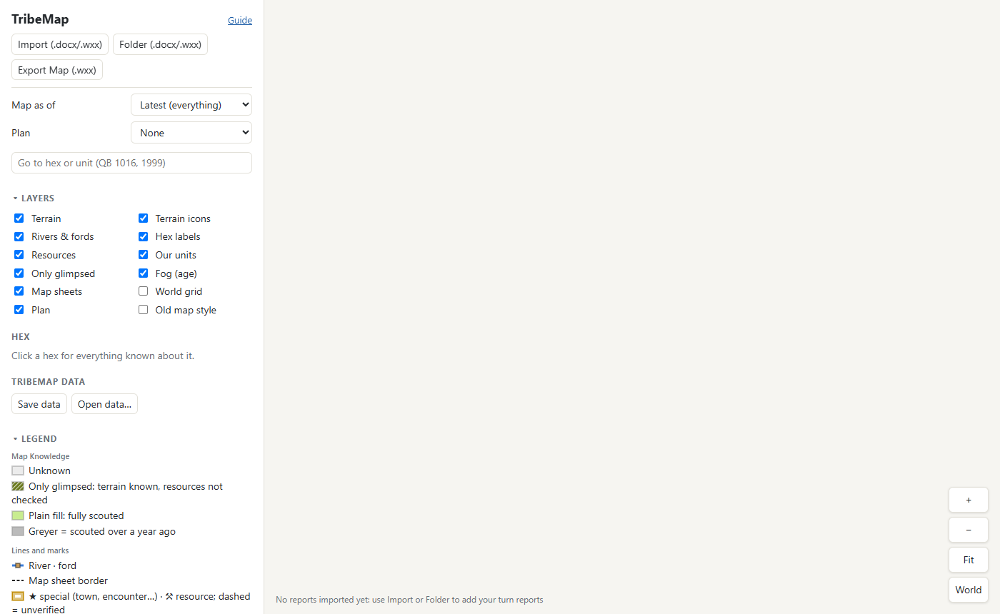
Your turn results arrive by email from the GM as a Word file, named like 0999_901_01_Results.docx.
Save them somewhere on your computer, then bring them in with one of the buttons at the top of the sidebar:
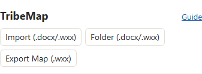
.wxx maps, and leaves everything else (orders, Tribe
News) alone.Reports are imported straight away, oldest turn first, whatever order you pick them in. TribeMap reads your clan number from the first report, so there's nothing to set up. The summary shows what each report added:
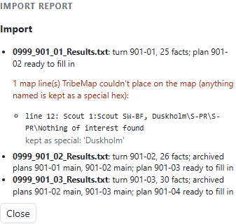
Close the summary and your map is there: every hex your tribes and scouts have seen, with its terrain, and your units' current positions.
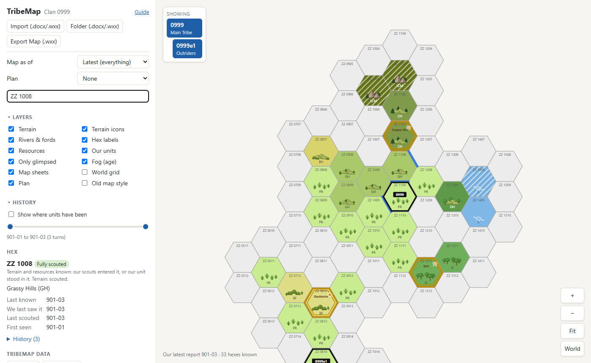
ZZ 1008) or one of your units (0999) in the box under
Plan and press Enter.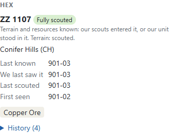
Map as of (at the top of the sidebar) replays the map as it was at an earlier turn.
Showing (the box at the top left of the map) picks which tribe you're working with. A tribe includes its elements; the others' scout routes are faded so one tribe's plan is easy to read.
Each import starts an empty plan for the next turn. Choose it in the Plan list (it's named after the turn,
e.g. 901-04). You can make alternative plans for the same turn with + New plan… and compare them.
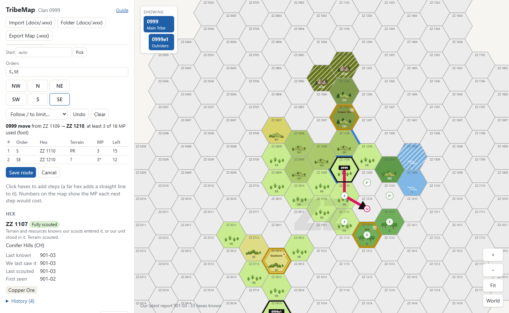
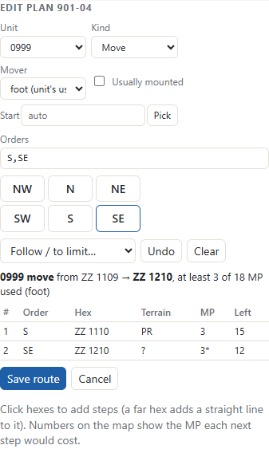
Scouts leave from where the tribe ends its move. Add them one at a time with + Scout party (the same editor as a move), or let TribeMap suggest routes with Auto-plan … scouts: it fills the tribe's free scout parties with routes that reach the most unknown ground, and keeps any you've already drawn.
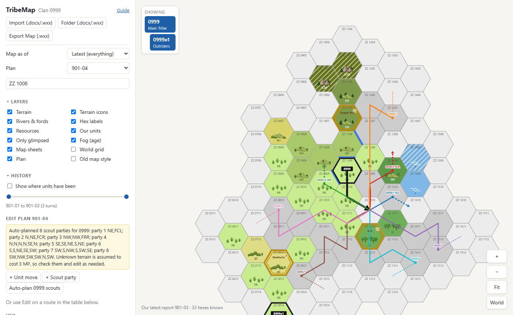
The Plan panel lists every route, with how far it gets and the MP it uses. Use Edit to change a route, or ✕ to remove it. Routes such as FRL follow a river or coast: TribeMap shows which way it expects them to go.
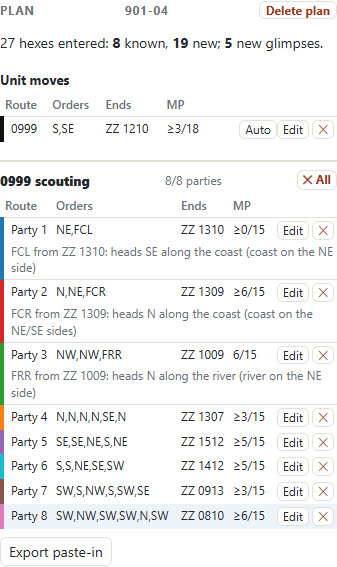
Click Export paste-in under the plan table. It downloads a small Excel workbook laid out like the orders spreadsheet's movement and scouting sheets: copy its rows into your orders file, check them, and send your orders to the GM as usual.
Once you've imported two or more turns, tick Show where units have been in the History section. Each tribe and element gets a track of its moves, with a dot where each turn ended (zoom in to see the turn written beside it). Drag the two handles to choose the turns shown.
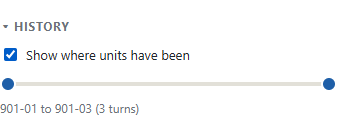
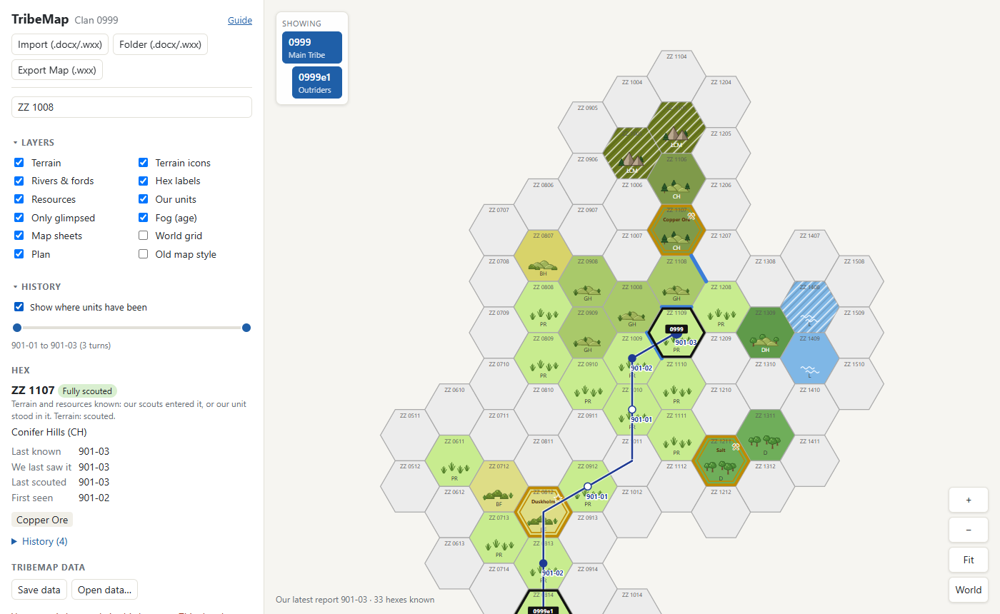
Everything you import and plan is kept only in this browser on this computer. Clearing your browser's site data, or using a different browser or computer, starts you with an empty map. So:
.zip file.
Do it now and then; TribeMap reminds you when it hasn't been saved for a while.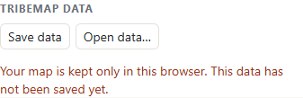
You can also just keep your report files: importing them all again (Folder (.docx/.wxx)) rebuilds the map, though not your plans.
| Button | What it does |
|---|---|
| Import (.docx/.wxx) | Import one or more turn reports (.docx, or a .txt copy) or .wxx maps. |
| Folder (.docx/.wxx) | Import every report and .wxx map in a folder and the folders inside it. |
| Export Map (.wxx) | Download the map as shown as a .wxx file for Clan
Cartographer or Worldographer, e.g. to share with an ally. Your units and plans are never included. |
| + Unit move + Scout party | Draw a route in the current plan. |
| Auto-plan … scouts | Fill the selected tribe's free scout parties with suggested routes. |
| Export paste-in | Download the plan as a workbook to paste into your orders. |
| Save data Open data… | Back up everything, or load a backup. |
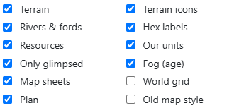
| Layer | Shows |
|---|---|
| Terrain, Terrain icons | Each hex's terrain as a colour and a small picture. |
| Rivers & fords | Rivers along hex edges (blue) and known fords. |
| Hex labels | Each hex's map reference. |
| Resources | Finds (ore, salt…) and special hexes such as settlements, outlined in gold. |
| Our units | Where your tribes and elements are. |
| Only glimpsed | Hatching on hexes seen only from next door or passed through: the terrain is known but nobody has checked them for resources. |
| Fog (age) | Hexes scouted long ago fade to grey: worth another look. |
| Map sheets | The borders between the game's map sheets. |
| World grid | The whole world when zoomed out, tinted by climate. |
| Plan | The selected plan's routes. |
| Old map style | Draws your map like an old parchment chart, with hand-drawn terrain and a title cartouche. Just for the look; switch it off to plan. |
Click the Layers, History or Legend heading to fold that section away (and again to open it).
The legend at the bottom of the sidebar lists the terrain on your map with its MP cost, then the other marks.
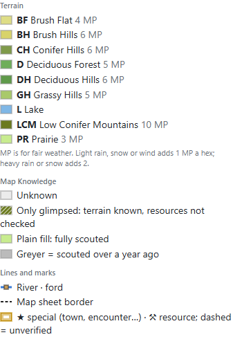